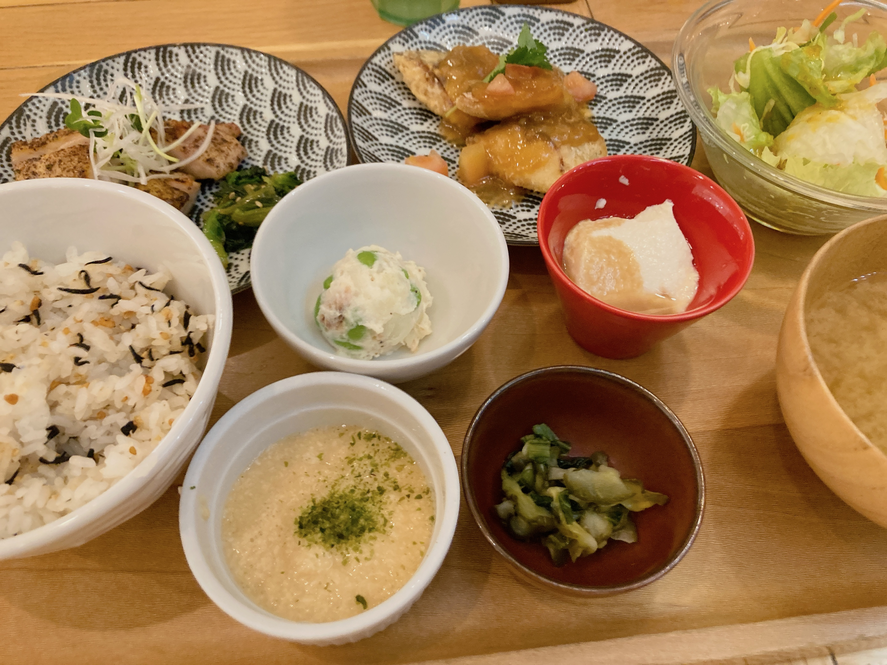

定休日はちゃんと調べよう
今年東京最後の夕飯ということで、研究室への道中で見つけた素敵な定食屋さんに寄ろうと思ったら、木曜定休でした……。

代わりのおぼんdeごはん。
ソロでも複数人でもめっちゃ通ってる。私に連れてこられたという知人も多いはず。
メイン二種類をコスパよく組み合わせられるメニューがあって嬉しい。巡回が捗ります。
私はどうやら、おかずに対するご飯の消費量が多いらしい。というのも、この献立でサラダ食べてポテサラ食べて冷奴食べて……くらいでこのご飯一杯目が消える程度には。あんまり日記には書けてないけど、自炊夕飯でもご飯一合を炊き立てその日のうちに食べ切ったりしてる。
白米食べ過ぎでぶくぶく太っていくのかというとそんなこともない。でもどうなんでしょうね。菓子なんかで腹を膨らませるよりかは健康的にしろ、もうちょっと朝とか昼とかに分散できないものか……。
まあ、美味しいので問題なし😁